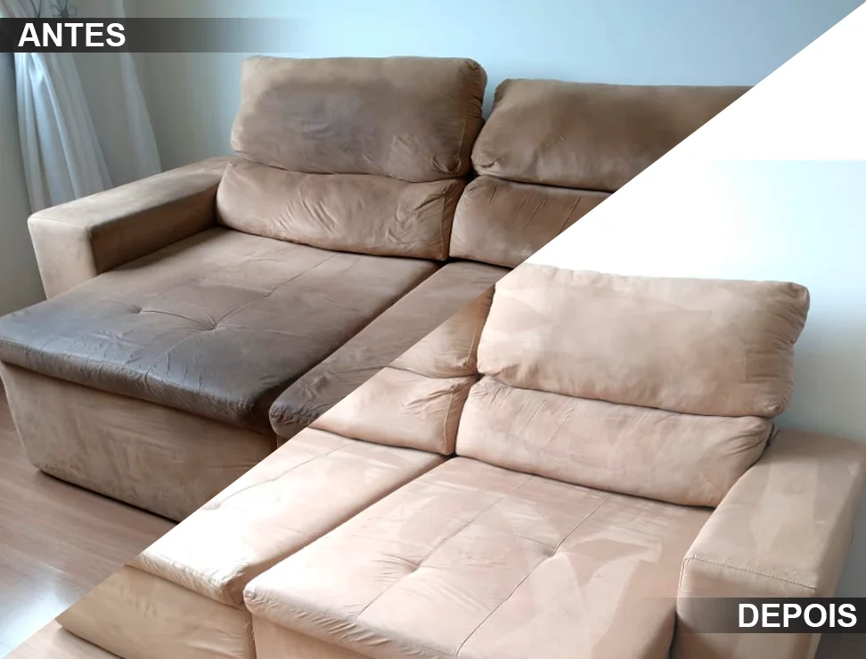
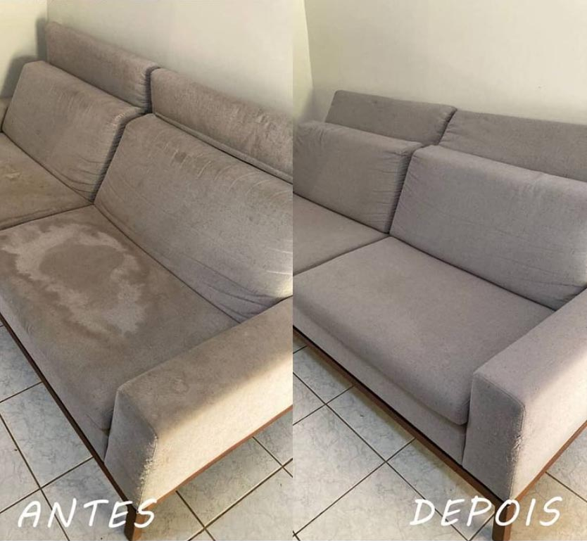
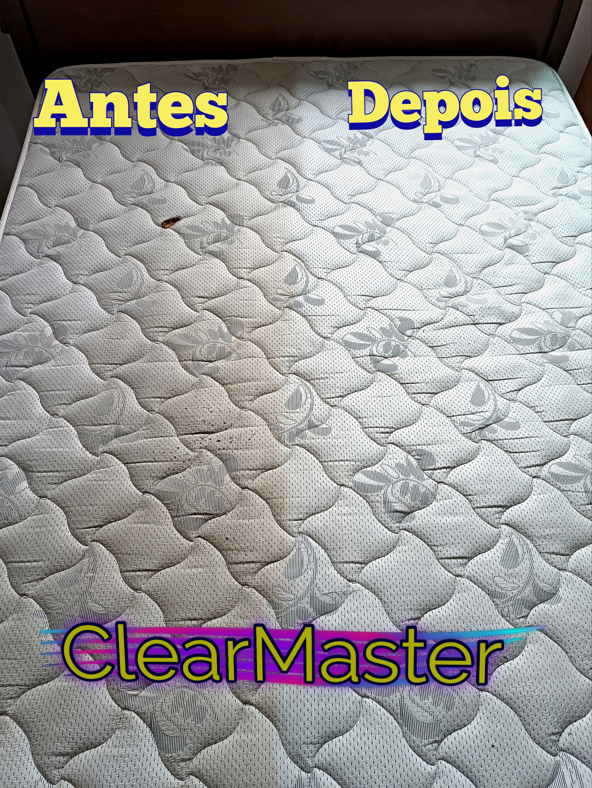
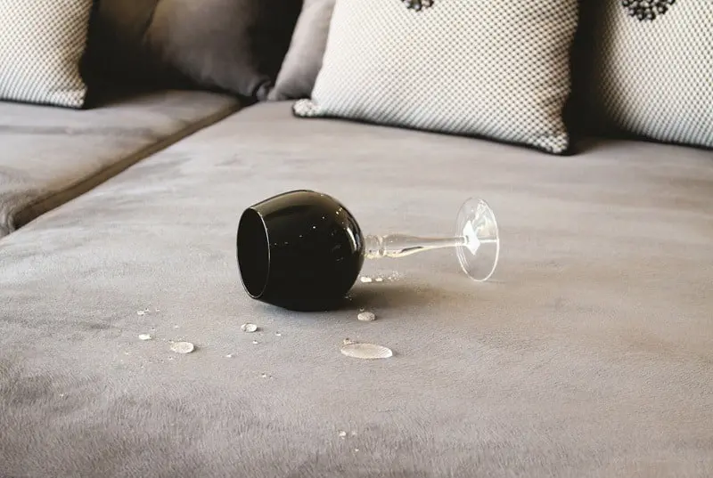
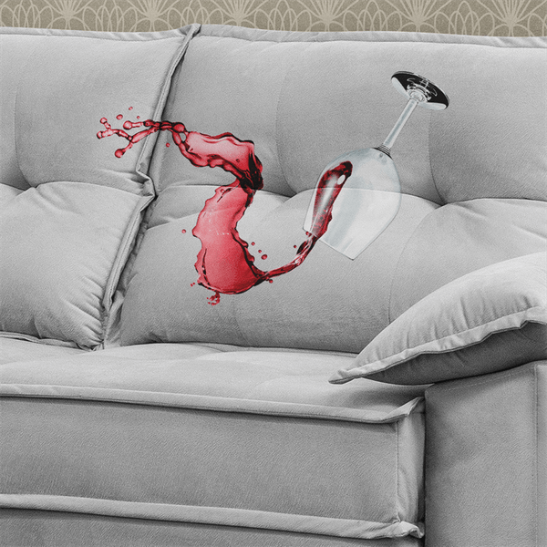
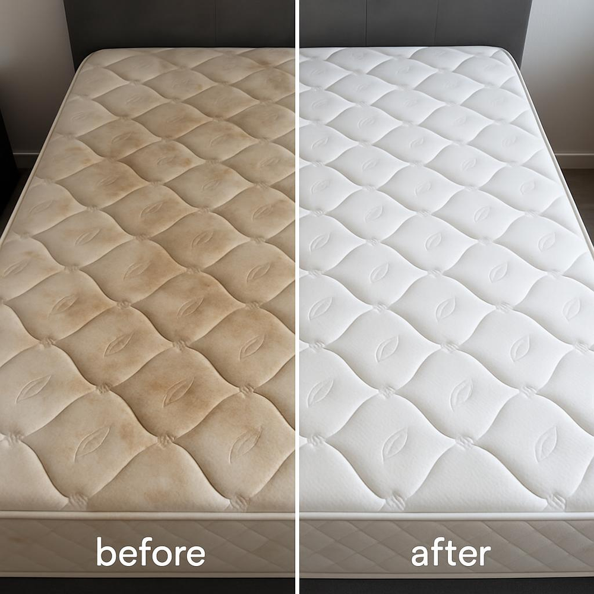

Higienização profissional e impermeabilização avançada para sofás, colchões e estofados. Eliminamos ácaros, fungos e manchas com tecnologia de ponta.

Na ClearMaster, transformamos ambientes e melhoramos a qualidade de vida desde 2016. O que começou como uma paixão por limpeza profunda tornou-se referência em higienização e impermeabilização avançada.
Nossa missão é proporcionar ambientes mais limpos, saudáveis e protegidos. Contamos com profissionais treinados e certificados, especializados em técnicas avançadas e em constante atualização.
Falar com um especialistaBuscamos a perfeição em cada serviço realizado.
Comunicação clara e honesta com nossos clientes.
Compromisso com resultados e com o meio ambiente.
Constante busca por novas tecnologias e métodos.
Soluções completas para higienização e proteção dos seus estofados

Removemos profundamente a sujeira, ácaros e bactérias do seu sofá, devolvendo sua aparência original e garantindo um ambiente mais saudável.
Solicitar Orçamento
Eliminamos ácaros, fungos e bactérias que se acumulam no seu colchão, proporcionando noites de sono mais saudáveis e confortáveis.
Solicitar Orçamento
Proteja seus estofados contra derramamentos acidentais com nossa impermeabilização de alta performance, barreira invisível que não altera o tecido.
Solicitar OrçamentoDescubra o valor do seu serviço em segundos
O deslocamento pode ser isento para serviços de maior porte — o valor será informado ao final.
A impermeabilização cria uma barreira invisível contra líquidos e manchas, protegendo seus móveis de acidentes do dia a dia. Com nossa tecnologia, os líquidos derramados formam gotas na superfície, dando tempo para limpar sem absorção.
Duração média de 12 meses, dependendo do uso e manutenção.
Garantir minha Impermeabilização
Conheça nosso processo de atendimento, simples e eficiente
Entre em contato via WhatsApp ou telefone para tirar dúvidas e solicitar orçamento sem compromisso.
Envie uma foto do estofado para determinar o melhor tratamento e elaborar o orçamento.
Apresentamos um orçamento detalhado, transparente e sem surpresas.
Marcamos o serviço de acordo com sua disponibilidade.
Nossa equipe realiza o serviço com equipamentos profissionais e produtos de alta qualidade.
Verificamos juntos o resultado para garantir sua total satisfação.
Veja a transformação que nossos serviços proporcionam — clique nas fotos para ampliar

A satisfação de nossos clientes é nossa maior recompensa
Fiquei impressionada com o resultado da higienização do meu sofá. Parecia que eu tinha comprado um novo! A impermeabilização realmente funciona — meu filho derramou suco e foi só limpar com um pano, sem manchas.
Passos - MG
Meu colchão tinha manchas antigas que eu achava que não sairiam mais. A equipe da ClearMaster fez um trabalho incrível. Agora durmo muito melhor, principalmente porque tenho rinite alérgica.
São João Batista do Glória - MG
Contratei a impermeabilização para o sofá da sala. Depois de alguns meses, posso dizer que valeu cada centavo! As crianças já derramaram refrigerante várias vezes e nunca manchou. Recomendo demais!
Alpinópolis - MG
Tire suas dúvidas sobre nossos serviços
Simule agora e confirme pelo WhatsApp
O deslocamento pode ser isento para serviços de maior porte — o valor será informado ao final.